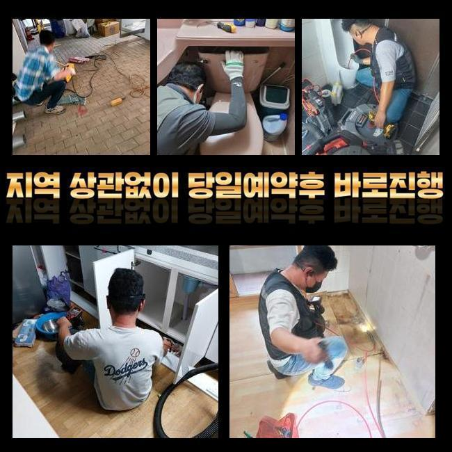
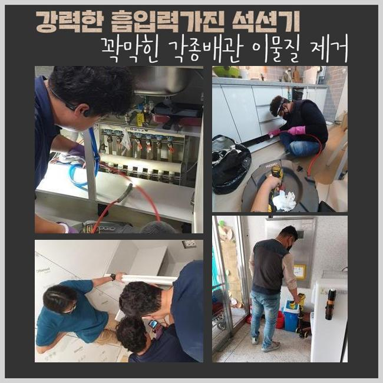
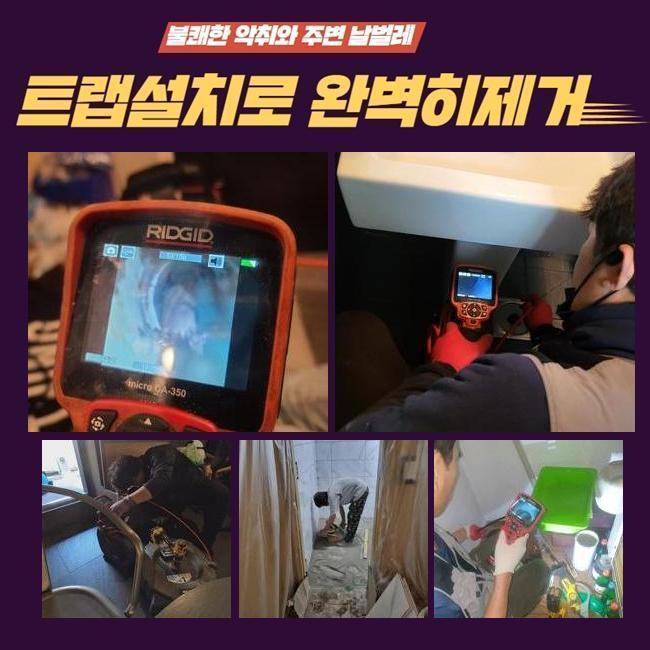
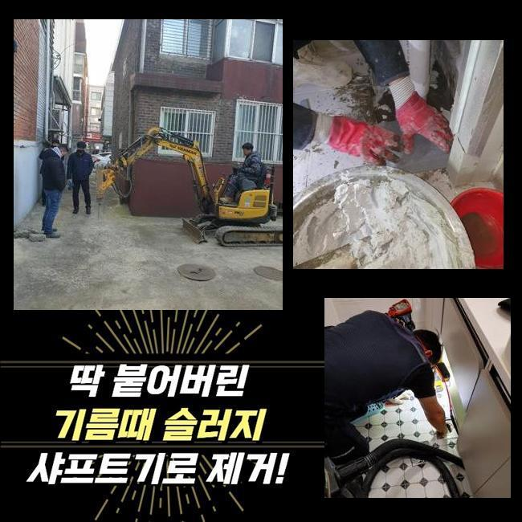
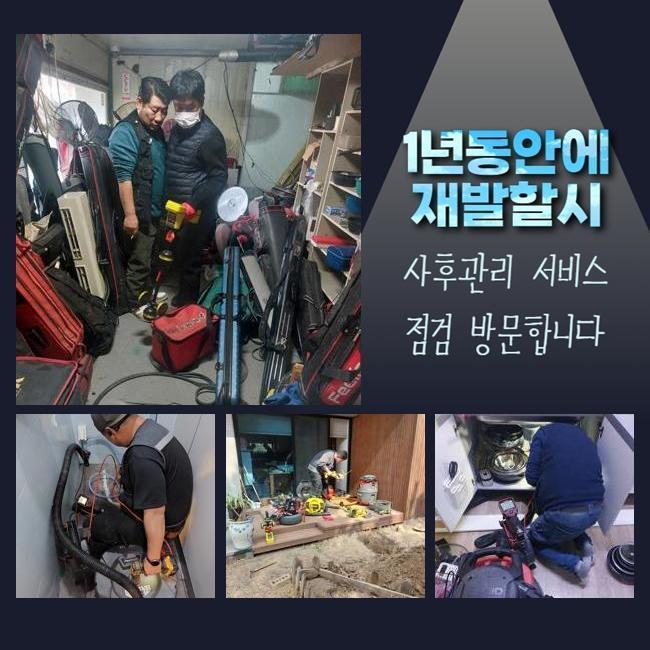
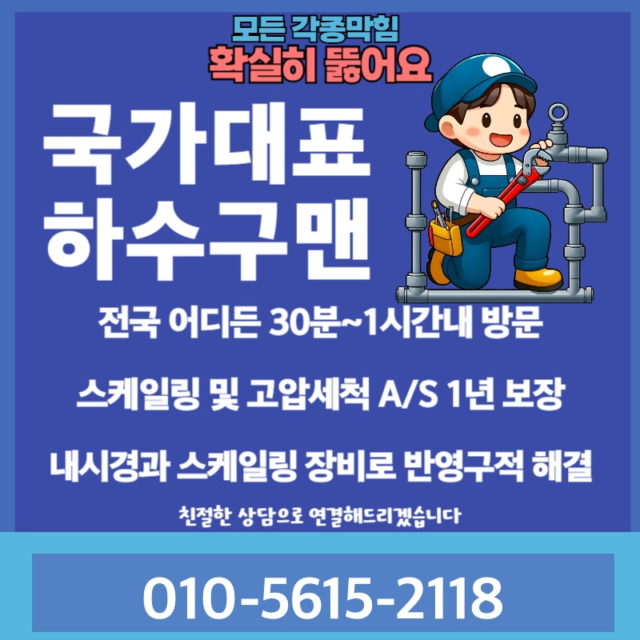

🏠 성남 창곡동화장실하수구역류 상적동 하수관고압세척 출장수리
용인시 처인구 고압세척 전문 시공 후기

📋 작업 개요
- 위치: 용인시 처인구, 수원시 영통구, 화성시 동탄
- 서비스 유형: 고압세척, 내시경점검
- 작업 일시:
- 업체명: 하수구수사대 (010-5615-2118)
🔍 문제 상황
성남 창곡동화장실하수구역류 상적동 하수관고압세척 출장수리
배관시설에서 올라오는 냄새의 경우 생활 속에서 마주하게되는 고민인데요
냄새들의 원인으로는 하수라인의 문제일 가능성이 큽니다 배수관에 이물이 쌓이면서 유수를 방해하기에 이르고 이로인해 흡착된 이물질이 딱딱해지면서 발생되는 것입니다
냄새들을 없애려면 쌓이게되어 산패된 잔해들을 깨끗하게 제거하는게 중요하죠
허나 생활 속에서 이같은 사실들을 알지 못해 다양한 방책을 실시해보지만 냄새들을 시정해낼 수 없는 현장이 대다수에요
장비의 보유량과 노하우가 부족할 시 증세들이 발발한 시점에 무심코 해결했다간 배수관이 균열될 가능성이 현저하여 예기치 못하게 사태가 심각해질지 모릅니다
그런 까닭에 결함을 마주했을땐 전문인의 청소를 꾀하는게 좋겠습니다
달려간 장소에선 세탁기와 연결된 관로의 오류로 인하여 곤혹을 치르고 계셨었죠

🔎 원인 분석
💡 전문가 진단: 정밀 진단 장비를 사용하여 슬러지의 고착 여부를 판명하고 타격/세척 작업을 실시했습니다.
이 장소의 관로는 공동배수관과 여타 배관들과 함께 이어져있는 형태였는데 의뢰인분이 말해주신건 구간별로 하수관에서 솟구치는 증상을 보시고는 의뢰하셨다 하셨죠
정황을 들어보니 배수구와 바닥 하수관에서 접촉된 스팟쪽에 증세가 발생한걸로 판단했어요
공공배수로의 구간마다 증세들이 발생하면서 다양한 고충이 발발한 걸로 보여졌어요
수도 사용 시 관계없다고 생각한 바닥 배수관에서 역류해버리는 상황으로 신속히 내방해서 곧장 작업들을 할 생각이였습니다
현재로서는 배수관 근처에는 이물들이 넘처흘려 세척이 쉽지 않았습니다
1순위로는 석션기기를 써서 넘친 하수들을 빨아당기고 천천히 조심스럽게 진단해봐야 하는데요
석션도구를 쓰면 오수와 그리고 잔재도 제거된 까닭에 추후의 작업단계들도 원활하게 이행될 수 있죠
내시경장치로 확인하니 가정과 이어진 관로에는 잔여물이나 오염물들은 목격되지 않았고 공동배수관으로 흘러가는 부위에 기름성분이 침전된 형태를 확인했는데요
고착물들은 유수를 막아설만큼 큼지막했고 악취들의 주요 기조로 판단되었어요

🔧 작업 과정
증상을 잠재울 목적으로 관로들의 슬러지들을 분쇄하는 샤프트기기를 이용하여야 되며, 또한 엘보라인까지 청소를 이행해 정체를 완화시키고 악취까지 사그라들게 했죠
거주지 등에서 이용하고 있는 가지배관들은 공용관로로 오물들이 한데 모여 처리장까지 운반이 되죠
보통 오염물은 엘보라인과 같은 부위에 축적될 수 밖에 없는 구조들로 이루어져있죠
그리하여 메인관은 주기성을 갖춘 점검하는게 중요하겠습니다
여기저기로 퍼지게 될 위험이 있는 사태들을 방지하려면 필요하다면 출수구에도 작업들이 행해져야하는데요
세척하는 중간에 제거된 잔해물을 석션장비를 이용하여 꾸준히 제거해야 세척이 수월해지고 내시경장비로 진단할 때도 시야확보가 원활하여 적절 수순에서 석션도구의 가용은 반드시 있어야해요
잔해가 굳게되어 하수관에 붙은 경우라면 불어난 오염물들을 조각으로 하는게 좋겠습니다
샤프트기기를 써서 통수가 안되는 부위를 해결한 후엔 작업이 잘 이뤄졌는지 관찰하기 위해서 하수구 내시경을 통해 점검을 진행시킵니다
이때에도 여러분들도 직관적으로 확인가능하고 청소된 배수로를 시각적으로 살펴볼 수 있습니다
시공에 관한 사안을 하나하나 공유하고 세척을 진행하니 의뢰인분이도 안심하실 수 있습니다
우리집 하수관이 어떤 기조로 문제된건지 무슨방법을 쓰면 안정적인것인지 의뢰자께서 확실히 알고 계시면 관리하고자 할 때도 긍정적일거에요
세척이 끝나면 대량의 쏟아내서 하수관으로 흐르게되는지 검수를 진행시킵니다
이전과같이 물들이 솟아오르거나 시원하게 수도가 빠져나가는걸 목격했죠
고객에게 컨디션이 회복된 배수관을 유지함과 더불어 관리할 수 있는 팁을 말씀드린 뒤 마무리에 들어갔습니다


✅ 작업 완료
어떻게 해결해야 하는지 고민이 될 때 저희업체에게 전화주시면 빠르게 방문드려 점검할게요
증상의 상태들에 적합하도록 해결방안들을 말씀드려 편히 이용하시도록 도와드려요
물이 안빠져서 곤란함을 감수해야 될 때는 아무때나 저희전문가들에게 연락 주세요
문제의 가정이 쾌적함과 동시에 문제없도록 도와드리겠습니다



⚠️ 하수구 배관 막힘 예방 및 관리 가이드
- ✅ 머리카락, 비닐, 물티슈 등 물에 분해되지 않는 이물질은 절대 흘려보내지 마세요.
- ✅ 기름기 많은 식기는 설거지 전 키친타올로 먼저 기름때를 닦아내세요.
- ✅ 주기적으로 배수구에 뜨거운 물을 가득 부어주어 유지방 고착을 방지하세요.
- ✅ 작업 후 1년 이내 재발 시 무상 A/S 보증 서비스를 제공합니다.
💡 핵심 정리
- 확실한 장비 작업(내시경 점검 및 샤프트 스케일링)으로 원인을 뿌리 뽑습니다.
- 작업 후 1년 이내에 동일한 부위 재발 시 100% 무상 A/S 서비스를 보장합니다.
- 서울 · 경기 · 인천 전 지역에 24시간 언제든 긴급 출동할 수 있도록 항시 대기 중입니다.
❓ 자주 묻는 질문 (FAQ)
🚨 용인시 처인구 고압세척 문제로 고민이신가요?
정확한 원인 진단과 확실한 시공으로 재발 없는 해결을 약속드립니다.
24시간 긴급 출동 | 서울 · 경기 · 인천 전지역 | 1년 내 재발 시 무상 A/S